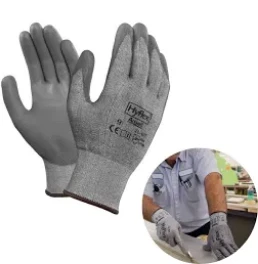
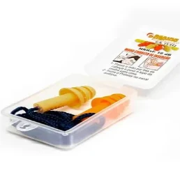
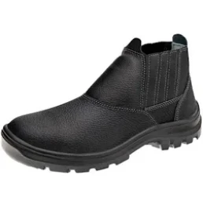
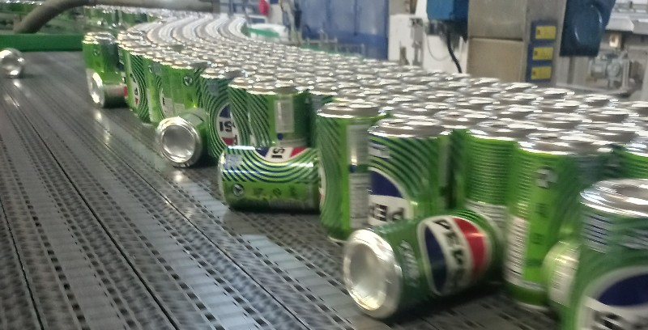
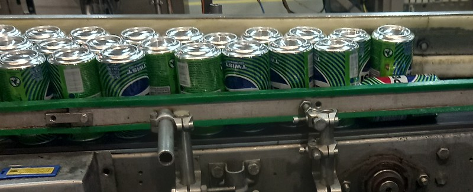
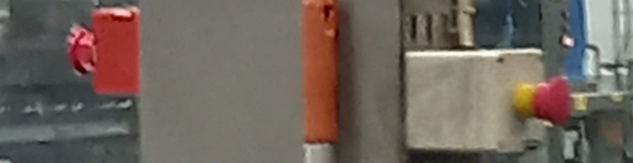
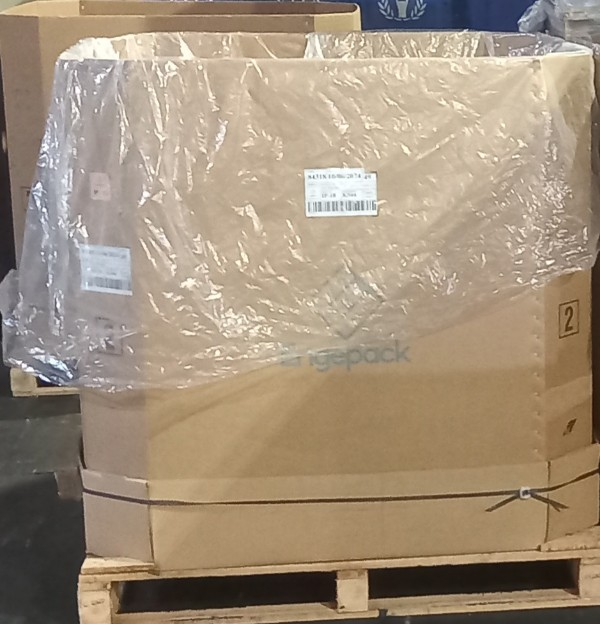

Procedimento para funcionário iniciante no virador de latas:
1. Antes de iniciar o trabalho, é fundamental que o funcionário receba um treinamento específico sobre o funcionamento do virador de latas e as medidas de segurança a serem seguidas.
2. Sempre utilize os Equipamentos de Proteção Individual (EPIs) recomendados para a atividade, como luva de segurança, protetor auricular e calçado apropriado. Tais como:
Luva Hyflex 11-727
Protetor Auricular
Bota de Segurança



3. Se posicione em pontos que às latas sempre estão tombadas para virar às latas.

4. Observe atentamente o fluxo das latas na esteira, certifique-se de que não há latas obstruindo a passagem na esteira.

Caso isso aconteça, acione o Botão de emergência de movimento da esteira para parar a esteira.

5. Ao finalizar o trabalho, lembre-se de realizar o 5S para manter a organização da área de trabalho. Realize a limpeza do ambiente e recolha as latas que porventura tenham caído durante o processo. Descarte essas latas na caixa de performa.

Além disso, é importante não deixar o virador de latas sem uma reserva para assumir o seu lugar. Caso perceba que está demorando para a troca de turno, comunique o líder ou operador responsável para garantir a continuidade da operação de forma adequada.